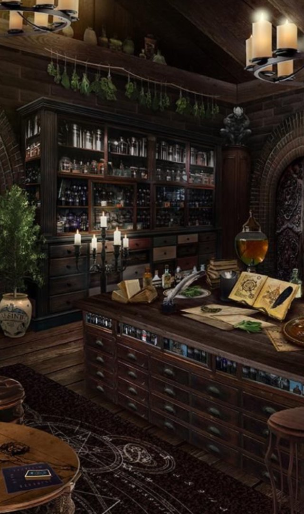

Te encuentras durmiendo, cuando de repente escuchas ruido a metal golpear el suelo.
Al abrir los ojos, delante de ti, un Orco mirándote fijamente, su mirada se cruza con la tuya y sus
labios gotean
sed de sangre, mientras observas como se relame el labio su puño se cierra y se lanza sobre ti con
un frénesi implacable
Recuerdas tus años de entrenamiento, y te preparas para el combate
Ha sido una lucha intensa, ese maldito Orco te agarró desprevenido... Eres fuerte y hábil, pero te
sientes cansado, y dolorido.
Te preguntas donde estás...
Comienzas a caminar, y luego de unos minutos, a lo lejos, te encuentras con una pequeña cabaña.
Tiene las luces prendidas, ¿estará inhabitada? ... Te acercas de a poco, y escuchas un grito a lo
lejos!
Volteas rapidamente y ves un goblin esconderse entre los arboles.

Te sientes muy herido como para ir a socorrer a quien esté gritando. Entras en la cabaña en busca de
refugio
Levantas la mirada, y te sientes maravillado por lo que ves, una biblioteca
enorme, y muchas pociones... ¿vivirá alguien aquí?
La curiosidad te gana y empiezas a hurgar entre algunos cajones, no encuentras nada de utilidad...
Sigues buscando, y encuentras unas vendas... Debes curarte
Escuchas nuevamente gritos!
Vas corriendo rápidamente hacia los arbustos y ves a un Goblin agarrando fuertemente a una mujer del
brazo
Das un fuerte grito y el Goblin la suelta, no te esperaba!
Luego de analizarte, se dá cuenta que has luchado hace poco, ve la sangre correr por tus labios
Te percatas de que el Goblin no te tiene miedo, lo miras, limpias con tu mano la sangre, le sonries
dices...
¿Estás preparado?
En la mujer nace la esperanza, y grita "Toma esta poción! Te ayudará!", lanza una pócima por el
aire,
luego de agarrarla le quitas el corcho y la tomas
Te has curado 30 de vida
VIDA +30
VIDA +30
Te acercas lentamente a los arbustos en donde viste al Goblin por ultima vez. Sacas tu arma, rompes
algunas ramas y logras pasar.
Sigues para adelante, y un Goblin se acerca corriendo a ti!
El te mira, y sabe que has luchado hace poco, es mas pequeño, pero no te tiene miedo.
Te das cuenta que de su boca cuelga ropa ensangrentada...
Has llegado tarde!... Por un momento piensas...
¿Realmente necesitaba curarme?
¿Quién era esa mujer? Nunca lo sabras... Sacas tu arma, y te preparas!
Comienzas a vendarte los brazos, son varios los cortes que te quedaron luego de la batalla que
tuviste.
Luego de unos minutos te sientes mejor... Te curaste 15 de vida
Ves que hay varias pociones sobre un estante, pero no te atreves a tocarlas, no sabes que podria
pasar...
Intentas leer algunos libros, pero el idioma lo desconoces...
Te das cuenta que ya no se escuchan los gritos, decides ir a explorar a donde viste el Goblin por
ultima vez
VIDA +15
VIDA +15
El Goblin observa como desenfundas tu arma, y se aprovecha de la situación!
Te arroja una daga, la cual logras esquivar, pero por poco...
GANASTE!! GRACIAS POR PARTICIPAR DE ESTA PEQUEÑA GRAN AVENTURA !
MAS CAPITULOS VENDRÁN !! NUESTROS ESCRITORES SE TOMARON UNAS VACACIONES, NO DESESPERES!
NUEVAMENTE GRACIAS POR TU TIEMPO, NOS VEMOS PRONTO!
Haz clic en JUGAR para comenzar otra
aventura